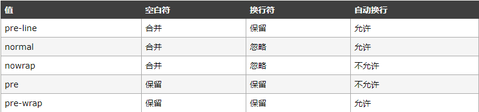
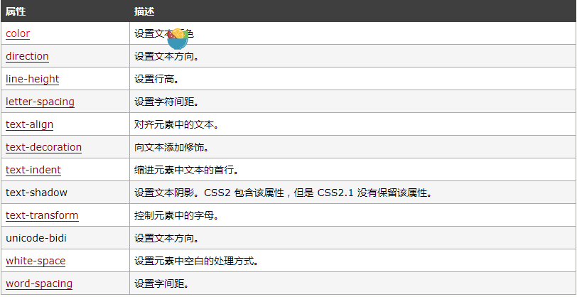

CSS相关知识点
一丶了解CSS
1.什么是CSS？
- CSS 指层叠样式表
2.样式类型
- 浏览器缺省设置
- 外部样式表
- 内部样式表
- 内联样式（拥有最高的优先权）
3.基础语法
代码结构

二丶选择器
1.元素选择器
2.id选择器
作用范围：
id 选择器可以为标有特定 id 的 HTML 元素指定特定的样式。定义方式：
以 "#" 来定义示例：
#red {color:red;}
< p id="red">这个段落是红色。< /p>建立派生选择器：
#sidebar p {
font-style: italic;
text-align: right;
}
即：id为“sidebar”的元素内的 < p > 标签的样式
3.类（class）选择器
作用范围：
类选择器可以为标有特定 class 的 HTML 元素指定特定的样式。定义方式：
以 "." 来定义示例：
.center {text-align: center}
< h1 class="center"> This heading will be center-aligned < /h1>建立派生选择器：
.fancy p {
color: #f60;
background: #666;
}
即：class为“fancy”的元素内的 < p > 标签的样式注意：
类名的第一个字符不能使用数字！它无法在 Mozilla 或 Firefox 中起作用。
4.属性选择器
作用范围：
对带有指定属性的 HTML 元素设置样式。定义方式：
以 "[属性]" 来定义示例：
[title=W3School]
{
border:5px solid blue;
}
即为 title="W3School" 的所有元素设置样式：注意：
只有在规定了 !DOCTYPE 时，IE7 和 IE8 才支持属性选择器。在 IE6 及更低的版本中，不支持属性选择。
三丶样式
1.背景
背景色：
p {background-color: gray;}背景图像：
body {background-image: url(/i/eg_bg_04.gif);}其他属性：
background-repeat: repeat-y; （即：y轴平铺）
background-repeat: no-repeat; （即：y轴平铺）
background-position:center; （即居中）
background-position:10% 50%; （即x轴10% y轴50%）
background-attachment:fixed;（即固定位置）
2.文本
缩进文本：
p {text-indent: 1em;}
p {text-indent: 20%;}水平对齐：
p {text-align:center;}字间隔：
p { word-spacing : -0.5em ; }字母间隔：
p {letter-spacing: 10px}字符转换：
h1 {text-transform: capitalize}text-transform属性:
none
uppercase:转大写
lowercase:转小写 capitalize:只对每个单词的首字母大写文本装饰：
p {text-decoration:underline overline line-through;}text-decoration 属性:
none
underline:下划线
overline:上划线
line-through:贯穿线
blink:文本闪烁(没效果)
处理空白符：
p { white-space : normal ; }
white-space 属性:
文本方向：
p { direction : ltr ; }
文本属性：

3.字体
-
指定字体：
body {font-family: Georgia,Magneto,serif;}
按照排列顺序依次寻找用户已经安装的字体，以“,”隔开，如果都不可用，则会使用通用的 serif 字体。5 种通用字体:
Serif 字体
Sans-serif 字体
Monospace 字体
Cursive 字体
Fantasy 字体 字体风格：
p {font-style:normal;}
p {font-style:italic;}
p {font-style:oblique ;}
字体变形：
p {font-variant:small-caps;}
字体加粗：
p {font-weight:bold;}
字体大小：
p {font-size: 20px;}